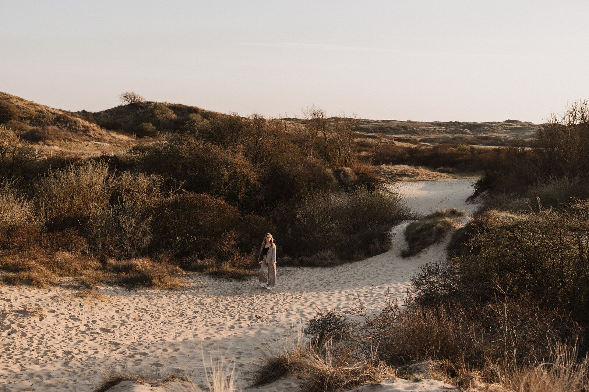
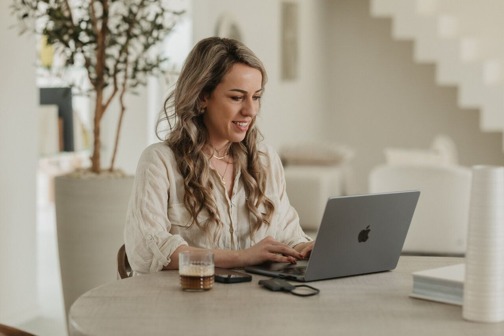
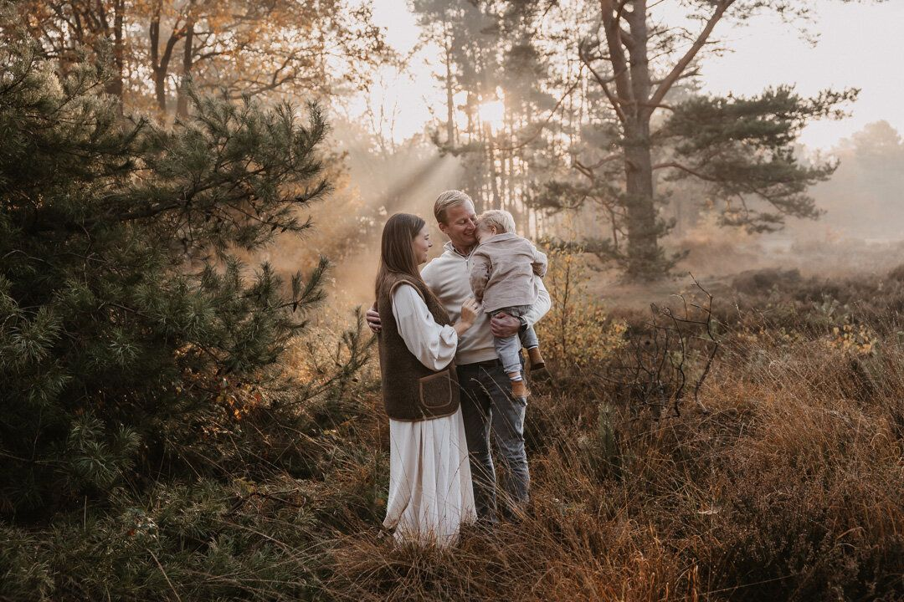
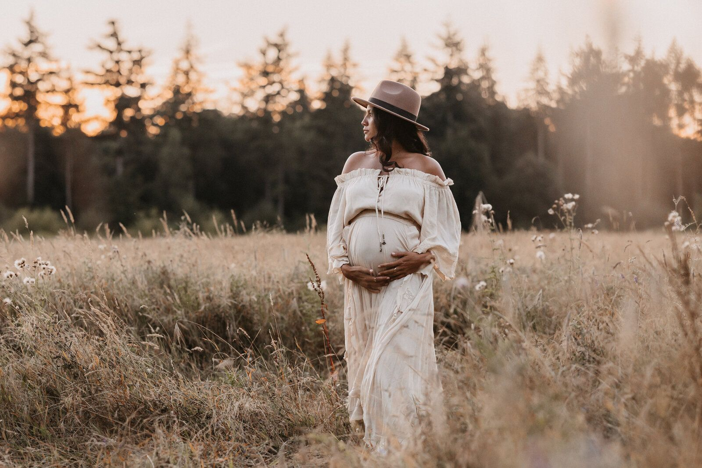

Zacht licht,echte momenten.
Lifestyle fotograaf in Breda en Roosendaal. Zwangerschap, newborn en gezin: ongedwongen, zonder poseren.

Hi, ik ben Marloes.
Lifestyle- en brandingfotograaf uit Breda. Mijn moeder was fotografe, en ik liep al van jongs af aan met een camera rond.
Ik leerde kijken voordat ik leerde fotograferen.
Begin 2020 maakte ik van mijn liefde voor fotografie mijn eigen bedrijf. Perfecte plaatjes interesseren me niet. Wat me raakt zijn de kleine dingen: een hand die even wordt vastgehouden, een blik die net iets langer blijft hangen.
Bij mij hoef je niets te kunnen. Je hoeft niet te weten hoe je moet staan, en je kinderen hoeven niet mee te werken. Ik pak de leiding waar nodig en geef ruimte waar het mag.
Ik werk buiten in zacht licht, of bij jullie thuis.
Waar sta je nu?
Elke fase heeft zijn eigen moment. Kies wat bij jou past, dan zie je welke shoot het is en wanneer je hem plant.
Zwangerschapsshoot
Foto's van jou en je buik, met of zonder partner. De locatie spreken we samen af, afhankelijk van hoe je je voelt.
- Wanneer
- Tussen 29 en 34 weken zwanger
- Waar
- Buiten, tijdens golden hour
- Tip
- Ook newborn? Boek het combinatiepakket: meer foto's en korting.
De shoots
Lekker spelen op de heide, samen lopen, knuffelen. Je hebt bijna niet door dat er foto's worden gemaakt. Je kiest een favoriete locatie van Marloes, of jullie eigen plek.


Zwangerschap
Jij en je buik, met of zonder partner. Locatie in overleg.
29–34 wkNewborn
Bij jullie thuis, in jullie eigen bubbel. Knuffelen, kusjes, voeden. Geen haast: Marloes past zich aan het ritme van de baby aan.
1–6 wkCombinatie
Zwangerschap en newborn samen: meer foto's dan het losse pakket, en korting.
2 shootsGezin
Spelen, wandelen, kietelen. Op de heide, het strand of een plek die jullie zelf kiezen.
BuitenMotherhood
Alleen jij met je kindje(s). Binnen of buiten, ook tijdens het voeden als je dat wilt.
Binnen/buitenPortretten
Geen schoolfoto, maar een echte lach. Bij Marloes aan huis, in kleur en zwart-wit.
Vanaf 9 mnd
Er zijn drie pakketten: Basis, Premium en Luxe. De prijzen stuurt Marloes je graag toe.
Zo gaat een shoot
Van het eerste berichtje tot je favoriete foto's, in vier stappen.
- Stap 1
Contact
Stuur een berichtje via WhatsApp of mail, of kies direct een plek in de online agenda. Samen zoeken we een datum.
- Stap 2
Voorbereiden
Je krijgt een brochure met kledingtips, locaties en praktische tips. Vlak voor de shoot hebben we nog even contact.
- Stap 3
Shooting day
We ontmoeten elkaar op de locatie en lopen samen naar de plek. Buitenshoots zijn altijd tijdens golden hour.
- 48u · 2 wk
Oplevering
Binnen 48 uur een preview. Binnen twee weken je online gallery, waar je zelf je favorieten kiest.
Wat ouders zeggen
5,0 op Google, uit 57 reviews- Een ontspannen, natuurlijke sfeer. Niemand hoeft geforceerd te poseren.
- Ze neemt de tijd, ook met een pasgeboren baby.
- Fijne communicatie, en de foto's komen op tijd.
- Er hangt een klantenkast met jurken klaar voor de shoot.
Samengevat uit reviews op Google en haar eigen site.
Zelf fotograaf?
Marloes geeft ook coaching, workshops en online cursussen voor fotografen. Reviewers prijzen haar als coach en om haar cursus.
Vraag naar coachingPlan je shoot.
Stuur een berichtje of check een datum. Marloes komt binnen 48 uur bij je terug.
Contact
info@editbymarloes.nl
06 20 84 55 31
Bereikbaar ma–vr 8:30–17:00
Werkgebied
Breda en Roosendaal, tot ongeveer een uur reizen.
Fruitlaan 102, Breda